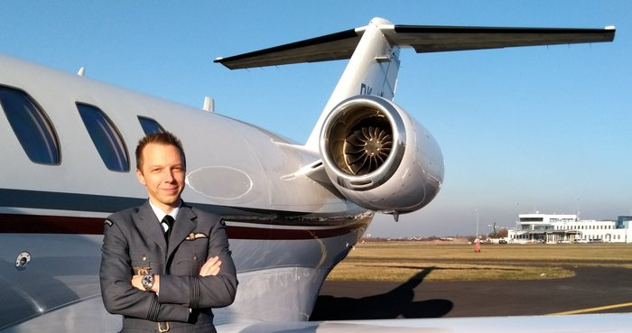
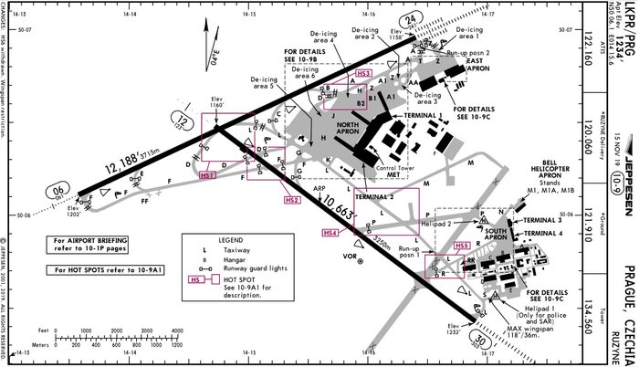

Один день пилотом бизнес-авиации
Каждая компания бизнес-авиации может отличаться процедурами, самолетами, планированием и т.д. Не удивлюсь, если кто-то тут из летающих после прочтения скажет, что у них все по другому.
Я летаю капитаном на самолетке Cessna Citation Jet C525A/B/C. Это небольшой бизнес-джет на 6 пассажиров (максимум 7), максимальная дальность около 3500 км (плюс\минус), максимальный эшелон FL450 (~13.8 км).
Описанный полет/день, можно сказать, один из самых стандартных и простых, который состоит из одного лега. Бывает, что мы летаем 4-5 рейсов за день, иногда даже один из двигателей не глушим — описывать такой день пока что-то не хочется, лучше как-нибудь видео в таймлапсе попробую записать.
Где-то возможно "наврал" с таймингами, т.к. во время полета время не фиксировал и восстанавливал уже по памяти. Я не пытался описать все выполняемые процедуры, иначе бы этот пост вырос до неприличных размеров, а вкладку в браузере вы бы закрыли еще недочитав и до середины.
Вся история возможно выдумана, все совпадения случайны и вообще все это происходило в параллельной вселенной.
За пару дней до
Получаю сообщение, что меня назначили на новый рейс в Рим, все данные уже есть в нашей системе планирования. Еще через полчаса приходит смс-ка от моего второго пилота — все OFP (Operational Flight Plan) готовы, топливо плюс\минус посчитано, окончательный рассчет будет уже в день вылета.
Стоит отметить, что у нас в компании планированием полета (маршруты, OFP, флайт планы, топливо, запасные и т.д.) занимаются сами пилоты. Тот отдел Operations (опсы), которые в больших авиалиниях все это делают и выдают пилотам уже готовые документы, у нас занимается, в основном, получением слотов, PPR и пермитов (разрешения) и разруливанием различных нештатных ситуаций.
За день до
Рейс все еще в системе (бывает клиент может отменить полет и перед самим вылетом), поэтому можно забронировать отель. Не во всех компаниях бизнес-авиации, но в большинстве (из тех, что я знаю) отели бронят себе пилоты. Из плюсов — в зависимости от расписания, расположения аэродрома, каких-либо местных особенностей (топливо ждать пару часов) можно выбрать гостиницу либо рядом с аэропортом, либо в центре города и устроить себе пару экскурсий, либо где-нибудь вообще подальше от больших городов. Так как мы летим в Рим на несколько дней, то отель в этот раз берем в центре.
Вечером еще раз смотрю погоду, проверяю чарты, нотамы, делаю апдейт OFP и отправляю запрос нашей хендлинговой службе на заправку топливом. В крыльях с предыдущего полета оставалось 1240lbs топлива, мне понадобится 3200lbs. Путем несложных вычислений (с поправкой на ветер) получается, что нужно долить 1130 литров
Сам маршрут выглядит так
или в текстовом виде
VOZ Z21 PISAM DCT TAGAS DCT GIRDA DCT BAXON DCT UNUMU DCT IPGOR Y106 GITOD
День X
06:40 Получилось проснуться раньше будильника. Ок, встаю и иду умываться.
07:20 Завтрак и кофе. Параллельно проверяю почту и смотрю погоду, везде "экстремальные" условия CAVOK — видимость больше 10 км, без облаков, без гроз и т.д.
07:50 Пора ехать. На машине мне до аэродрома 25-30 мин, общественным транспортом получается около 1 часа.
08:30 В офисе. Пока прогревается кофе машина, можно подать флайт план. Для этого мы используем систему Arinc, в ней же и планируем все наши маршруты, она же нам считает все наши перформансы.
08:35 Приходит сообщение, что флайт план был изменен CFMU Amended. Это означает, что нам слегка поменяли маршрут. Ок, сверяем поданный
N0401F390 VOZ Z21 PISAM DCT TAGAS/N0404F380 DCT GIRDA DCT BAXON DCT UNUMU/N0407F370 N737 IPGOR Y106 GITOD
и полученный измененный
N0401F390 VOZ Z21 PISAM DCT TAGAS/N0404F380 DCT GIRDA DCT BAXON DCT UNUMU/N0407F370 DCT IPGOR Y106 GITOD
Разница в том, что нам поменяли трассу N737 на спрямление сразу на точку IPGOR. Круто, но по факту между UNUMU и IPGOR ничего нет, и эти точки находят на одной прямой.
08:40 Пришел мой второй пилот с которым я сегодня выполняю рейс. Обновляем наши iPad'ы — чарты, погода, нотамы и все, что касается полета.
08:50 Брифинг. Куда летим, как летим, что ожидается по маршруту, что интересного в нотамах, наиболее вероятные заходы в Риме (STAR и Approach), запасные аэродромы, в каком состоянии самолет по документам и т.д.
09:05 Готовим пакет документов, распечатываем, подписываем.
09:15 Теперь можно переодеться в униформу. У нас довольно необычная форма по сравнению с другими компаниями, она стилизована под форму Королевских ВВС времен второй мировой войны. Таким образом компания и ее владелец отдает дань чехословацким пилотам, которые сражались в Британии.

09:30 Все готово, можно идти на самолет.
09:35 Проходим через рамки и выходим на перрон. Самолетка стоит у бизнес терминала — метров 500 по прямой. Ок, звоним на хендлинг, чтобы нас отвезли.
09:40 Подъехали. Пора будить самолетку.
Наши процедуры в компании расписаны так, что второй пилот "работает" внутри, капитан — снаружи. Когда я летал вторым, на мне была подготовка систем самолета (забить фмску, взять диспетчерское разрешение), осмотр салона, подготовка кейтеринга (бокс с едой, горячая вода, лед, проверить, что на месте напитки, вино, пиво и т.д.). Сейчас капитаном на мне обход самолета, заправка, работа с хендлингом и клиентами. Если где-то нужно ускориться, то соответственно друг другу помогаем.
09:50 Заправка закончена

10:00 Осматриваю самолетку
10:10 Все готово к вылету, осталось только дождаться пассажиров. Иду встречать их в терминал.
10:20 Подъехали 2 из 4. Пока они решили перекурить, отправляю багаж с хендлинг агентом на самолет. Пишу в мессенджере второму, чтобы принял чемоданы и запросил технический старт.
У нас небольшой самолет, в отличие от боингов и эирбасов у нас нет APU (ВСУ — вспомогательная силовая установка), которая бы нам давала воздух и электричество. Поэтому на земле, если нет GPU (Ground Power Unit), мы запрашиваем технический старт одного двигателя на холостых оборотах. В этом случае мы можем включить всю авионику, кондиционер и отопление.
10:30 Все в сборе, можно идти. Один из плюсов бизнес-авиации — вам не нужно стоять в очередях, от момента входа в здание терминала и до посадки в кресло проходит неприлично мало времени по сравнению с обычными авиалиниями.
10:35 В самолете, закрываю двери, второй пилот стартует второй двигатель. Провожу брифинг — сегодня мой коллега Pilot Flying, я буду Pilot Monitoring, полет займет 1 час 30 минут на высоте 39000 футов или почти 12 км, эвакуационные выходы здесь и здесь, маски в случае разгерметизации выпадут вот отсюда, так как летим немного над морем, то жилеты можно найти вот тут. А вообще подготовленный кейтеринг находится вот здесь (сегодня у нас офигенный набор канапе), охлажденное шампанское уже ждет не дождется, чтобы быть открытым, если вдруг захочется чего-то еще, то у нас на борту есть вино, пиво, виски и другие напитки прямо вот тут у вас в баре. Приятного полета :)
10:37 Сажусь к себе в кресло, надеваю наушники. Мой коллега вводит в курс дела — полоса, выход (SID), высоты и т.д. Ок, пора сделать Before Taxi Checklist
10:45 Запрашиваю руление.
— Ground, dobrý den! DFC12B (Dark Blue 12 Bravo — наш позывной), stand S9, request taxi.
— DFC12B, dobrý den, ground. You're cleared to taxi holding point runway 24 via taxiway P L H B, initially hold short of K.
Записываю в OFP R24 PLHB xK и делаю ридбек (повторяю то же самое, что мне и сказал диспетчер — делается для того, чтобы диспетчер удостоверился, что я принял сообщение, и принял его правильно) 
10:47 Выезжаем на рулежку L и второй пилот дает команду на Taxi Checklist
— Taxi lights — ON
— Brakes — Working
— Nosewheel — Steering
— Flaps — Set for departure, 15
— Flight Instruments — No red crosses, all good
— Flight controls — Checked, free and correct
— Crew briefing — Completed
10:48 Подъезжаем к рулежке K, у которой мы должны остановиться
— DFC12B, ground, continue holding point runway 24 via H and B.
— H, B, runway 24, DFC12B.
10:50 На рулежке B нас переводят на другую частоту
— DFC12B, contact tower 134560. Ahoj!
— 134560, diky, ahoj, DFC12B!
10:51 Настраиваю частоту вышки
— Tower, DFC12B, dobrý den, taxiway B, fully ready upon reaching
— DFC12B, dobrý den, hold short runway 24, traffic on short final
— Holding short, DFC12B
Останавливаемся перед полосой, ждем пока приземлившийся борт съедет с полосы, самолетка готова к взлету. Заодно можно прочитать Before Takeoff Checklist.
10:53
— DFC12B, tower, line up runway 24, cleared for take off runway 24, wind 270/4
— Cleared for take off runway 24, DFC12B, ahoj!
Оборачиваюсь к пассажирам, все готовы, кто-то даже приготовился снимать взлет на телефон — показываю большой палец — вперед!
10:54
Второй пилот двигает РУДы, двигатели выходят на 60%
— Stabilized
— Ok, setting take off thrust
Проверяю, что двигатели вышли на взлетный режим, все показатели в норме
— Take off thrust set, indications normal.
Самолетка начинает разгон по полосе, тебя вжимает в кресло. На PFD (Primary Flight Display) отобразилась скорость 40 узлов
— Speed alive!
Самолетка очень легкая, двигатели мощные, скорость набирается очень быстро
— 70 knots!
— Checked!
— V1!
— Checked!
V1 скорость принятия решения. Пилот убирает руки с РУДов — теперь почти при любом отказе только вверх.
Проходим скорость поднятия носовой стойки
— Vr!
— Cheeecked!
Коллега тянет штурвал на себя, самолетка отрывается от земли — еххуу, летим!
— Positive rate
— Gear up
Убираю шасси, проверяю, что огни погасли
— Gear up, no lights.
— MCT, yaw dumper, vertical speed
Ставлю режим двигателей на Maximum Climb Thrust, включаю Yam Dumper и выставляю вертикальный режим в Vertical Speed.
Проходим 2500 футов. Выставляю частоту Праги
— Prague, DFC12B, dobrý den, passing 2500 ft
— DFC12B Praha radar, radar contact, climb FL160, direct to VOZ
— Climbing FL160, direct to VOZ, DFC12B
Так как второй пилот все еще летит вручную, то я выставляю эшелон FL160 и в FMS даю спрямление на точку VOZ. Плюс переставляю давление на стандартное Q1013 на всех 3 высотомерах. Проходим 4000 футов, второй пилот дает команду Flaps Up, включить автопилот и After Take off Checklist.
10:55 Проходим 6000 футов, чеклисты выполнены, самолетка летит в автопилоте, все ок, продолжаем полет.

11:15 Набрали эшелон FL390, передаю радио второму пилоту и иду в салон узнать, как там пассажиры. Шампанское открыто, канапе потихоньку исчезает, все довольны.
11:30 Полет проходит спокойно, все параметры в норме, расход топлива по плану и даже чуть меньше. Можно забить в фмс-ку подход и полосу, чтобы она нам посчитала примерный TOD (Top of Descent).

Мы идем через точку GITOD, поэтому STAR может быть GITOD 1F или GITOD 1G. По опыту полетов в Рим обычно давали 1F, плюс он короче, поэтому в фмс-ке выберем именно его.
Ну и судя по прогнозу полоса будет R15 и заход, опять же из опыта можно предположить, что будет ILS Z 15 с векторением.

11:40 Итальянцы начали нас снижать чуть раньше запланированного TOD. Ок, поставим пока вертикальную -1000 ft/m
11:50 Передаю радио второму пилоту, сам переключаюсь на частоту ATIS, чтобы взять последнюю информацию по погоде
— This is Ciampino ATIS arrival and departure, information A, ILS Z in use, runway 15, wind touchdown zone 040/5, CAVOK, temperature 15, dew point 02, QNH 1026, you have received information A.
Супер, погода CAVOK, небольшой боковик, вбиваю данные в фмс — она нам считает посадочную дистанцию, массу и скорости.
11:55 Диспетчер дает нам снижение до FL150 и переводит на Rome Radar
— Rome Radar, DFC12B, Buongiorno! Descending FL150 inboud GITOD.
— DFC12B, Buongiorno (с хорошим итальянским акцентом). Direct GITOD, GITOD 1F, expect vectoring for ILS Z R15.
— GITOD, GITOD 1F, vectoring ILS Z R15, DFC12B
Как мы и предполагали — GITOD 1F и ILS Z R15
12:00 Второй пилот передает мне управление и начинает готовить самолет к посадке. Еще раз проверяет все введенные данные, настраивает частоты ILS, VOR, NDB, курсы и минимумы.
12:02 Передаю управление обратно и настраиваю то же самое на своей стороне. Пора проводить брифинг. Еще раз проверяем все настройки, частоты, минимумы, обговариваем уход на второй круг, минимальные высоты, начало снижения по глиссаде и т.д.
12:10 Диспетчер снижает нас до 6000 футов. Переставляем стандартное давление на Q1026, проверяем высотомеры — Approach Checklist
12:15
— DFC12B, Rome Radar, descend 3000 ft, direct RA406, cleared for ILS Z R15
— Descending 3000 ft, direct RA406, cleared for ILS Z R15, DFC12B
Нам разрешили заход. Самолетка ловит локалайзер и глиссаду, скорость 200 узлов. Второй пилот отключает автопилот и переходит в ручное управление.
— DFC12B, full established
— Contact Ciampino Tower, 120.5, cau!
— 120.5, grazie, cau!
12:24
— Tower, DFC12B, buongiorno! ILS Z R15 full established
— DFC12B, tower, buongiorno. Cleared to land R15, wind 040/3
— Cleared to land R15, DFC12B
6 миль до полосы, пора начать выпускать закрылки.
— Flaps Approach
— Speed check, flaps approach set. Indicating.
Скорость начинает снижаться до 180 узлов.
4 мили до полосы, выпускаем шасси.
— Gear down
— Speed check, gear down, 3 green
Скорость снижается до 140 узлов
2 мили до полосы
— Flaps land
— Speed check, flaps land, indicating.
— Final check list
Скорость 120 узлов, 110, проходим высоту принятия решения, скорость 100 узлов, проходим торец полосы, высота 50 футов, скорость 95 узлов, высота 30 футов, 20, 10, выравнивание

12:27 Касание, второй пилот опускает носовую стойку. Начинаем торможение, выпускаем закрылки в положение Ground, автоматически выпускаются спид-брейки.
— DFC12B, Tower, vacate right via AD, contact ground 121750.
— Right AD, ground 121650, grazie, cau!
— Ground, DFC12B, buongiorno, AD.
— DFC12B, ground, buongiorno, right A, SD, stand 306.
— A, SD, stand 306, DFC12B
12:33 Все, мы на земле, выполняем After Landing процедуры и заруливаем на стоянку. Второй пилот выключает двигатели, я иду в салон.
— Добро пожаловать в Рим, температура 15 градусов, солнечно!
После того, как пассажиры вышли, нас буксируют на соседнюю стоянку

12:50 Звоню сейлзам, если нас вдруг не продали куда-нибудь еще — неа, остаемся в Риме. Теперь нам нужно заполнить документацию, немного прибраться, восполнить запасы напитков и шампанского, и уложить самолетку спать.
13:15 Все готово, звоним на хендлинг, чтобы нас отвезли в терминал и заказали нам такси до отеля.
14:00 В отеле. Забиваю еще пару данных в наши внутренние системы отчетности. Все, рабочий день закончен.